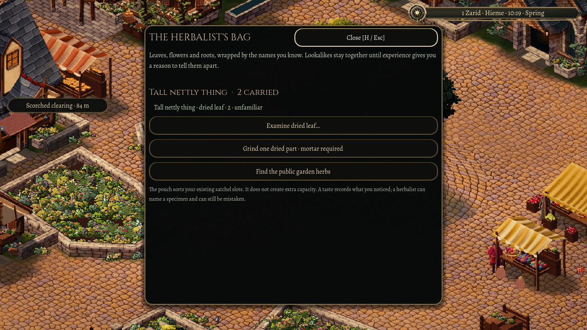
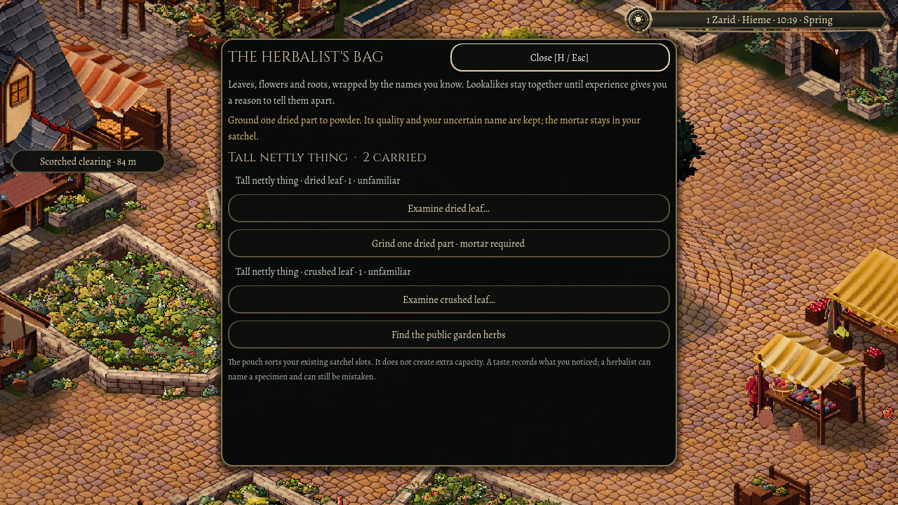

A mortar in Oakwell
A dried leaf is still a leaf until you do something with it. Oakwell now has another small act of preparation: carrying a mortar and pestle lets you grind a dried plant part in the herbalist's bag.
The action uses one actual part. The mortar stays with you, the powder takes its place among your belongings, and successful grinding contributes to the character's existing practice. Wenna already carries a finite mortar and a few uncertain dried specimens, giving the action a place in the town's trade.

Powder does not settle a doubtful name
Grinding keeps the ingredient's quality and history. It also keeps what you believe about it. A plant you only know by a folk name does not suddenly introduce itself because it has become powder.
The bag keeps dried and crushed parts under the name you know, with separate rows for their preparation. One part becoming powder does not multiply the contents or quietly identify the rest.

Room for what you make
If the remaining dried parts and the new powder will not both fit, the action leaves the specimen alone. It gives no practice for an attempt that produced nothing. Grinding the last part can reuse the space it leaves behind.
Returning to Oakwell keeps both the prepared ingredient and the practice earned from making it. They belong to the same saved character.
This pass brings the mortar action into the playable town. Drying racks, broader preparation and the profession controls still have their own work ahead.